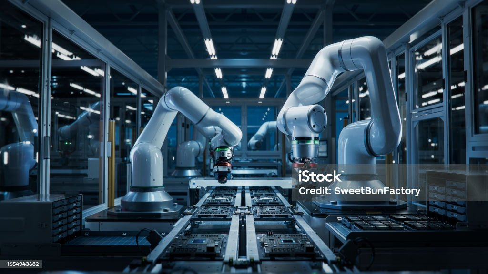
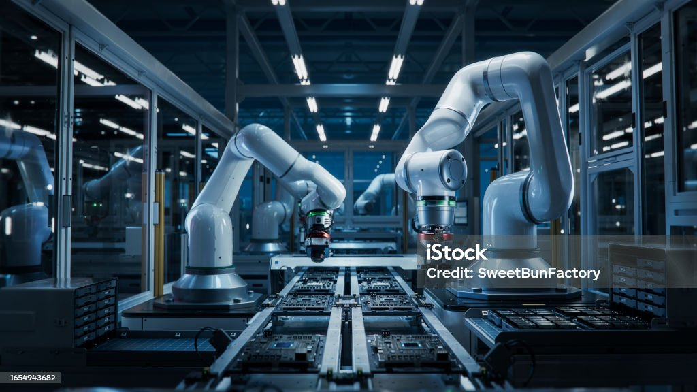

This was a unique project because, the company was seeking to
improve their app to make sure they stay ahead in the competitive online shopping market.
We discovered after thourough analysis that there are low conversion rate and high bounce rate as
a result of unsimplified checkout processes.The Suggestions we gave helped the company increase conversion rate by 10%.
This analysis was performed using Microsoft Excel.
.
 

Techtronix Innovations, a forefront player in the microchip and robotics industry,
was encountering challenges in streamlining its sales strategies,optimizing production planning, and pursuing market expansion.
They got in contact with us and after thourough analysis we discovered that some regions needed more market penetration inoder to optimize sales and
expand productline for product category with high profitability.
T.T Inc is a shipping company, and they wanted to Optimize inventory levels to minimize
overstock and understock situations, Understand the seasonal trend of sales for
different products, & Improve customer satisfaction by ensuring product availability.
At the end of the analysis, we gave them suggestion on how to optimixe operations to reduce cost
and how to increase customer loyalty for retention.